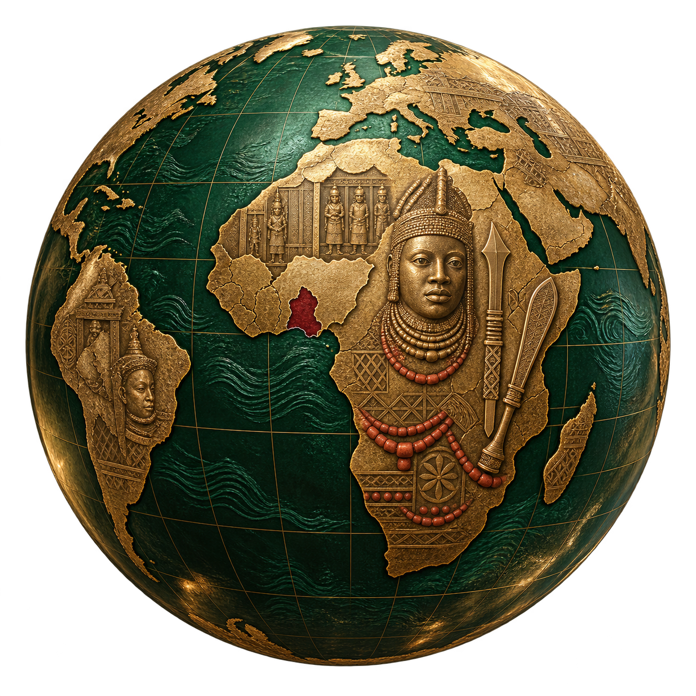

ROOTED
IN HERITAGE.
DRIVEN BY
PEOPLE.
A global community united for sustainable development, cultural preservation and a stronger Egbokor — at home and across the world.
at home & abroadSustainable
developmentA brighter
tomorrow

Egbokor.
A Brighter Tomorrow.
OUR PURPOSE
MISSION
Mission Statement
The mission of the Egbokor Community Integrated Development Foundation (ECIDF) is to advance structured development, enhance community welfare, and foster collaborative engagement with government, private sector, and partner organizations for the long-term progress of our communities.
ABOUT
ECIDF
More Than
a Community.
A Movement.
ECIDF connects people, ideas and resources to create lasting impact in Egbokor and beyond. Through collaboration, cultural preservation and sustainable development, we are building a stronger future for generations to come.
→Our StoryEdo State, Nigeria
“Our roots give us identity.
Our actions give them a future.”
OUR
FOCUS
People.
Projects.
Progress.
JOIN
US
A Stronger
Egbokor
Is Possible.
Be part of a global community making a real difference. Whether you live in Egbokor or across the world, there is a place for you in this journey.
Become a Member →Support Our Work